OPM Toolset manual
Live Deskew
Deskew an OPM acquisition while the microscope is still writing it, and watch the result grow. This chapter explains what deskewing does, then walks through a complete two-part experiment: a bead acquisition to calibrate the two camera halves, and the time lapse itself.
Everything below was produced by running the plugin on a real acquisition; the screenshots are the actual dialogs and the numbers are measured on the machine that wrote them. Substitute your own folders for the example paths.
Before you start
- Fiji with the OPM Toolset installed (the jar in
Fiji/plugins), restarted once after installing. - A GPU is used when CLIJ2 finds one, and the toolset falls back to the CPU when it does not. The CPU path is considerably slower but produces the same pixels; the log reports the rate it achieved for every volume.
- Enough free disk space for the results. The example acquisition produces about 0.7 GB per time point; Live Deskew shows a countdown to a full disk while it runs.
- The acquisition's
ExperimentalParameters.txt. You do not have to find it - Live Deskew looks for it beside the data - but until it is there, nothing is processed.
Why the data has to be deskewed
An oblique plane microscope (OPM) images a plane that is tilted with respect to the coverslip, and scans that tilted plane sideways through the sample. Each camera frame is therefore one oblique slice, and the stack of frames is a sheared version of the sample: a round nucleus looks stretched and leaning, distances along the stack are not distances in the sample, and nothing measured on the raw stack is in sample coordinates.
Deskewing is the one geometric correction that undoes this. It maps every raw voxel to where it belongs in the sample, and resamples the result onto a regular grid, giving an ordinary 3-D volume with cubic voxels that can be projected, measured, segmented and tracked with any tool that expects a normal stack.
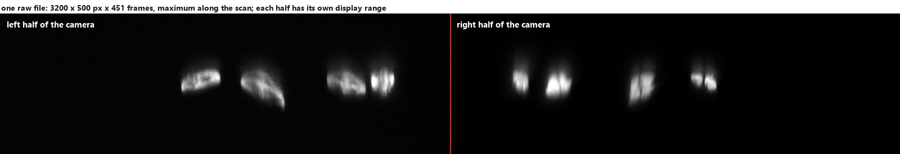
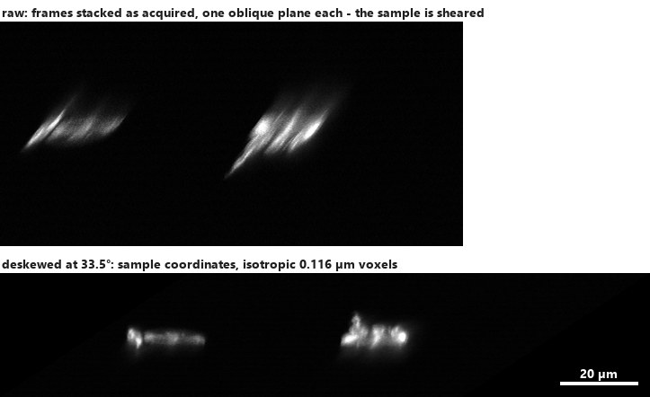
What deskewing produces
- a deskewed volume per time point and per output channel, with isotropic voxels;
- orthogonal projections of that volume - maximum or mean along X, Y and Z
(
maxZis the familiar top view,maxYandmaxXthe two side views); - a record of how it was produced: the acquisition geometry, the deskew matrix, and the channel and alignment settings used.
The geometry, in three numbers
Everything the deskew needs is three numbers, and all three are read from the acquisition's
own ExperimentalParameters.txt:
| Number | In the file | Example | What it is |
|---|---|---|---|
| XY pixel size p | Pixel size at object /um | 0.116 µm | One camera pixel, projected into the sample. It also becomes the voxel size of the deskewed volume in all three directions. |
| Z step size Δ | um per galvo DU ×
Galvo DUs per step | 0.265 µm | How far the oblique plane moves between two frames. It is the raw stack's "Z" step, measured along the coverslip, not a focus step. |
| OPM angle θ | Tilt angle | 33.5° | The angle between the imaged plane and the coverslip. |
Written out, a camera row y of frame f lands at
Y = y·cos θ + f·Δ/p Z = (h − y)·sin θ X = x (all in pixels of size p)so the deskewed volume of a camera half w × h pixels wide and N frames long comes out as
X = w Y ≈ h·cos θ + N·Δ/p Z ≈ h·sin θ
= 1600 px (185.6 µm) = 1448 px (168.0 µm) = 276 px (32.0 µm) for the example belowThe voxels are cubes, and that is deliberate. The deskew is evaluated on a grid
measured in camera pixels, so the result is isotropic at the XY pixel size (0.116 µm here) in X,
Y and Z. The step size and the angle decide how large the volume is, not how fine it is.
A deskewed volume therefore carries the same pixel size in all three axes, and Fiji's
Image ▸ Properties will show 0.116 three times.
The files: what goes in, what comes out
Input: one BigTIFF per time point and acquisition channel
The microscope writes one file per time point per acquisition channel, named by position, time and channel, plus one metadata file per acquisition:
3_timelapse_Position0001_Time000001_Channel0001_Frames_1_451.tiff 1.44 GB, 3200 × 500 × 451, 16-bit
3_timelapse_Position0001_Time000001_Channel0002_Frames_1_451.tiff the second acquisition channel
ExperimentalParameters.txt the geometry, read automaticallyThese are BigTIFF files, which plain ImageJ cannot open; the toolset reads them with its own reader, so no Bio-Formats detour and no modal error interrupts an unattended run. One file carries both camera halves (3200 = 2 × 1600 px), which is why one acquisition channel can yield two output channels.
Output: deflated TIFF, OME-Zarr, or both
| deflated TIFF | OME-Zarr | |
|---|---|---|
| What it is | One compressed TIFF per result: the volume, and one per projection. | One chunked dataset per acquisition, time points appended as they are written. |
| Layout | result/deskew/…-deskewed.tif,
result/maxZ/…-deskewed-maxZprojection.tif, … |
result/<acquisition>.ome.zarr with s0 (the 5-D volume)
and projections/maxZ…meanX inside it. |
| Channels | The composed result: flipped, aligned, in the configured channel order. | The stored camera halves, untouched - one channel each, unflipped and unaligned - plus the flip and the alignment matrix as metadata. |
| Readable while written | Only once a file is complete (which the toolset checks before reading one). | Yes: each time point is committed on its own, which is what makes a live preview of a run in progress possible. |
| Good for | Handing single results to someone, or to a tool that wants TIFF. | Time lapses, live monitoring, and revisiting the alignment later without reprocessing. |
Why OME-Zarr keeps the halves apart. Flipping one camera half onto the other and aligning it is a display decision, and a rigid 2-D transform can be measured better later (with a bead acquisition, for instance). By storing the halves as they were acquired and keeping the matrix in the metadata, the toolset can change the overlay of a finished dataset in seconds, without reprocessing a single voxel - while a TIFF result has the decision baked into its pixels.
The example experiment
The example is a live-cell time lapse acquired on the EMBL Imaging Centre OPM, with an image splitter that puts two emission bands on the two halves of the camera:
| Bead acquisition | Time lapse | |
|---|---|---|
| Folder | 4_beads_for_overlay_0 | 3_timelapse_0 |
| Purpose | Measure how the two camera halves sit on top of each other. | The experiment: dividing cells, two labels. |
| Deskewed size | 1600 × 1448 × 276 voxels per camera half (185.6 × 168.0 × 32.0 µm), isotropic at 0.116 µm | |
| Files per time point | 2 (_Channel0001,
_Channel0002), each 3200 × 500 × 451 px, 1.44 GB | |
| Time points | 1 | 50 on disk (817 planned, 5 min apart) |
| Geometry | p = 0.116 µm, Δ = 0.265 µm, θ = 33.5° | |
| Useful halves | 0001-left and 0002-right are bright; 0001-right shows the beads faintly, which is enough to register it. | 0001-left (cell bodies), 0001-right (bright label), 0002-right (second label). 0002-left carries no signal in this experiment. |
No microscope? Replay the acquisition. Live Deskew is driven by TCP/IP messages from the
acquisition software, and the repository ships a script that replays an acquisition already on
disk exactly the same way:
scripts/tcpip_acquisition_replay.groovy (drag it into Fiji's script editor and run
it). Every run shown in this chapter was made that way.
Step 1 · The Live Deskew window
Plugins ▸ OPM Toolset ▸ Deskew Live opens one small window. It is a monitor, not a
wizard: it can stay open for the whole session, and it says at all times what the listener is
doing and where the results are going.
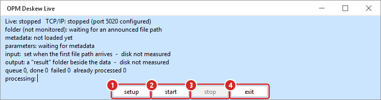
- setup opens the settings (Step 2). While the listener is running, only the deskew geometry can still be changed - everything else needs a stop and start, and the dialog says so rather than pretending otherwise.
- start begins listening. Nothing is touched before this.
- stop ends the run at the next safe point: the time point being processed is finished and committed, then the listener closes its port and its files.
- exit closes the window. It does not stop a run; stop it first.
Step 2 · The setup dialog, section by section
The setup has two depths. Simple mode shows what is decided once per session - which channels come out and where they go; advanced mode reveals what is decided once per microscope - the TCP port, the folder filters, the interpolation kernel. Advanced values are hidden, never reset, and the button at the bottom left switches between the two.
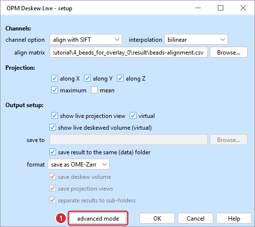
Input setup — where the files come from
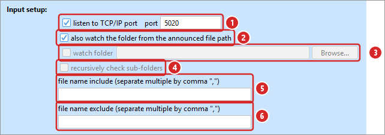
- listen to TCP/IP port — the acquisition software announces each finished file by sending its path, one per line, to this port. This is the reliable way to follow an acquisition: a path arrives only once the microscope has written the file.
- also watch the folder from the announced file path — additionally follow the folder each announced path points into, and pick up what is already in it. Leave this on for a real acquisition: it recovers the time points that arrived while Fiji was not yet listening, and it does no harm when TCP/IP works.
- watch folder — follow one folder instead, whether or not anything is announced. Selecting it turns TCP/IP off; these are the only two sources, and one of them must be on.
- recursively check sub-folders — for a watched folder that has an acquisition per sub-folder.
- file name include — only files whose name contains one of these fragments (comma separated). Empty means everything.
- file name exclude — and the opposite. Results the run writes itself are always excluded, whatever is typed here.
A file is never read while it is being written. Each TIFF is sampled every 250 ms and has to stay unchanged for a full second; then its internal offsets are checked against the file's length. Only then is it deskewed. A file that fails is retried twice, five seconds apart, and then reported in the Fiji Log.
Deskew parameters — the three numbers
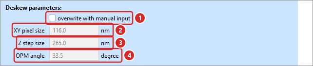
- overwrite with manual input — off is the normal case: the geometry is read from the
acquisition's
ExperimentalParameters.txt, and the three fields below are greyed out because they are not being used. - XY pixel size (nm)
- Z step size (nm) — the scan step, see the geometry above.
- OPM angle (degree)
Until the geometry is known, nothing is processed. Volumes that arrive first are queued
and held - they are not deskewed with the previous acquisition's numbers. The status panel says
metadata: waiting until the file is found, and parameters: waiting for
metadata instead of showing stale values. If your acquisition writes no parameter file,
tick overwrite with manual input and type the three numbers; the backlog is released
immediately.
Channels — which halves become which output channels
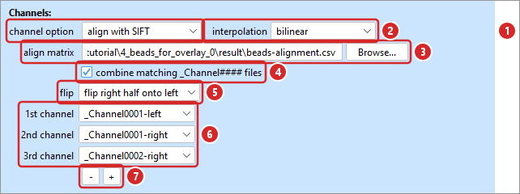
- channel option — what to do with a single file's two camera halves:
whole image(deskew the full width as one channel),fold by midline(mirror the right half onto the left),align with SIFT(mirror it and apply a rigid 2-D alignment),only left,only right, orleft & right separately. It is ignored while the files are being combined (4), where the slots decide. - interpolation — how a transformed pixel is sampled:
bilinear(smooth, the default) ornearest neighbour(keeps raw values, visibly blockier). - align matrix — the rigid 2-D transform that puts the halves on top of each other, measured from beads in Step 3. Leave it empty for the bead run itself.
- combine matching _Channel#### files — treat all
_ChannelNNNNfiles of one time point as one multi-channel result. This is the ordinary multi-channel setup, and it makes the run wait until every file a time point needs is complete. - flip — which half is mirrored onto the other. The matrix is always measured one way, so changing this needs no new measurement.
- the output channel slots — one row per output channel, each picking a camera half of
an acquisition channel:
_Channel0001-left,_Channel0002-right, …, or_ChannelNNNN-wholefor the full camera width. The order is the order of the channels in the result. - − / + — show fewer or more slots. A removed slot is set to
- (skip), so what is written matches the list you are looking at.
An OME-Zarr store keeps every half it finds, whatever the slots say: the slots decide the channel order of a TIFF result and how the store is shown. That is what lets you change your mind about the overlay later without reprocessing.
Projection and output
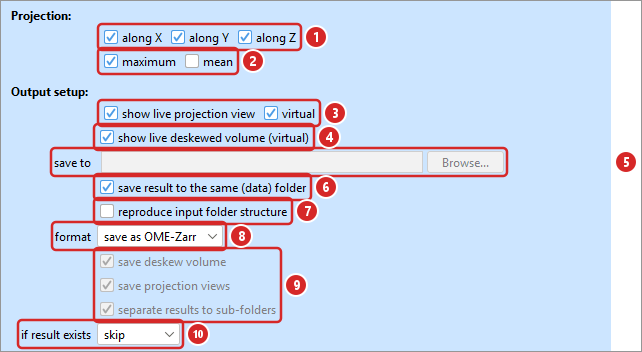
- along X / Y / Z — which orthogonal projections to produce.
along Zis the top view. - maximum / mean — how to reduce along the axis. Simple mode always uses the maximum.
- show live projection view (virtual) — open the projection movies in the OPM Data Viewer and extend them as time points arrive. Always virtual: a materialised preview would load everything before the window opens and then stop following the run. Materialise from the viewer when a copy in memory is wanted.
- show live deskewed volume (virtual) — the same for the 5-D volume. Always virtual.
- save to — an explicit result folder.
- save result to the same (data) folder — instead write to
resultbeside the data, which greys out the field above. This is the usual choice for an acquisition that already has its own folder. - reproduce input folder structure — for a recursive run, mirror the input tree under the result folder.
- format —
save as TIFF,save as OME-Zarrorsave both. OME-Zarr is the default and the one that makes a live preview possible. - TIFF layout — save the volume, save the projection files, and put each view in its own sub-folder. All three are greyed out for an OME-Zarr run, which carries its volume and all six projections inside the dataset.
- if result exists —
skipresumes an interrupted acquisition at the first time point that is not yet complete;overwritestarts again. A result only counts as existing when it is whole.
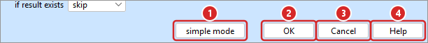
- simple mode / advanced mode — switches depth; the window re-fits itself.
- OK — store the settings. They are remembered between sessions.
- Cancel — change nothing.
- Help — the short version of this chapter, with a link back to it.
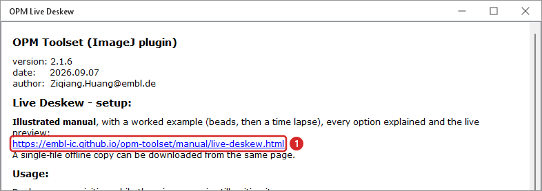
Step 3 · A bead run, to calibrate the two halves
The two camera halves see the same field through different optics, so one is shifted and slightly rotated with respect to the other - here by about 12 px (1.4 µm) and 0.2°. A bead acquisition measures that once, and every experiment afterwards uses the number.
Settings for the bead run
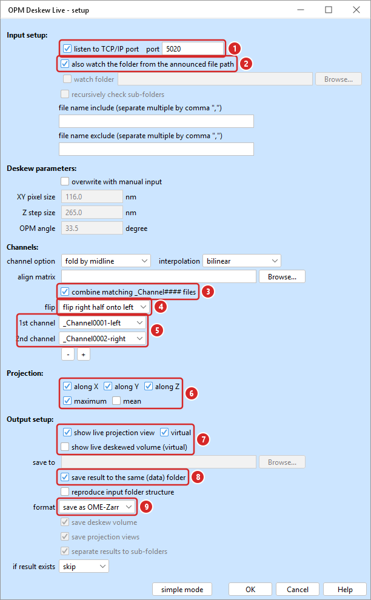
- listen to TCP/IP port 5020 — whatever port the acquisition software sends to.
- also watch the folder from the announced file path — on.
- combine matching _Channel#### files — on: one result per time point, not one per file.
- flip right half onto left.
- the two slots —
_Channel0001-leftand_Channel0002-right, the two halves that carry bead signal here. - projections along X, Y and Z, maximum.
- the projection preview, virtual. The volume preview is off - for beads the projections are enough.
- save result to the same (data) folder — results land in
4_beads_for_overlay_0/result. - save as OME-Zarr.
Start, then send the files
Press start. The window reports that it is listening and waiting:
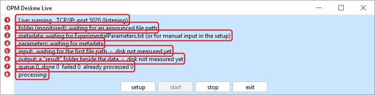
Now the acquisition runs. In this example the replay script plays the part of the microscope and announces the acquisition's files over TCP/IP:
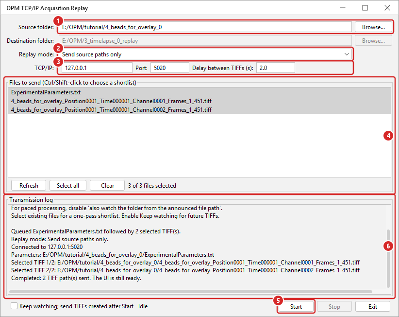
- Source folder — the acquisition to replay.
- Replay mode —
Send source paths onlyannounces the files where they are. The copy and move modes re-create an acquisition in another folder, with the files growing under their final names, which is the closest thing to a microscope writing them. - TCP/IP — host, the port Live Deskew is listening on, and the delay between files.
- Files to send — the parameter file first, then the TIFFs in acquisition order. Ctrl/Shift-click for a shortlist.
- Start.
- Transmission log — what was announced, and when.
Within a few seconds the geometry is read, the time point is deskewed, and the status panel fills in:
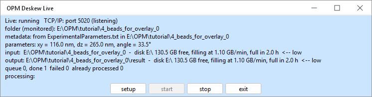
The projection preview opens by itself, one window per projection. It is an ordinary Fiji composite: the bead field of both output channels, over which the two halves are visibly not aligned yet.
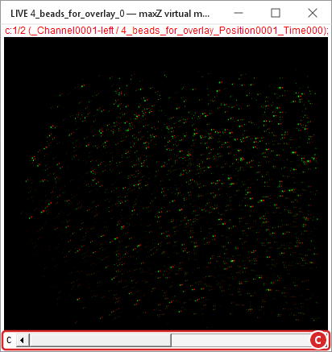
maxZ preview of the bead run, zoomed out to 25 %. The window is
virtual: planes are read as they are needed, and the window grows as time points arrive.
Its display range is what a mid-stack plane suggested - use
Image ▸ Adjust ▸ Brightness/Contrast to see faint beads.Measure the overlay: Utilities ▸ Channel Alignment
This command accepts raw bead volumes, already deskewed volumes, or existing 2-D max-Z projections, localises the beads in each camera half, and fits one rigid 2-D transform per half onto the first one. It does not need the bead run above - that was to see the field - and it takes a few seconds. Its window is titled Align Channel of OPM Data. Click a section heading to fold or unfold that section; when the sections do not fit on the screen they scroll, and OK, Cancel and Help stay at the bottom of the window.
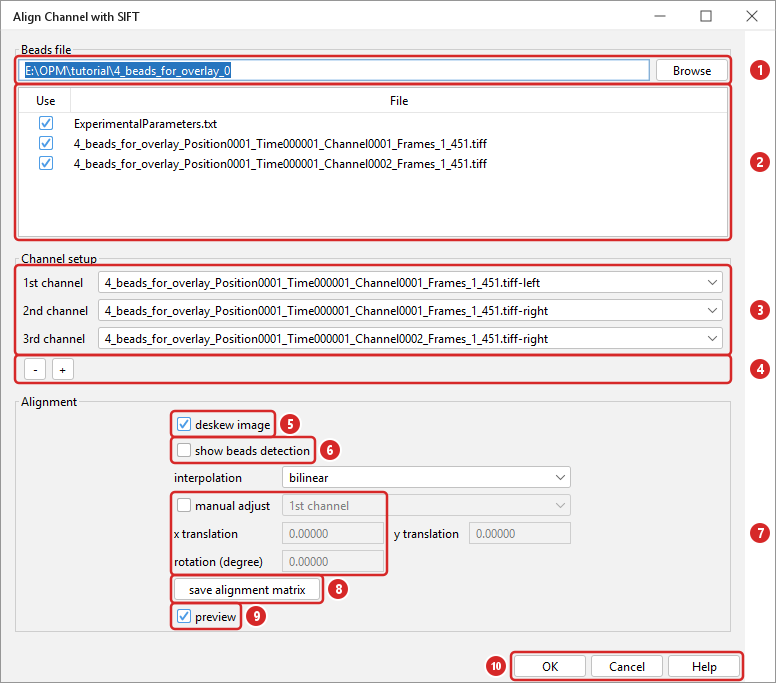
- Beads file — one bead TIFF or the folder holding them. Files can also be dropped on the window.
- the file table — which files to use.
ExperimentalParameters.txthas to stay ticked for the deskew below. - Channel setup — one row per channel, each picking a camera half: the first row is the reference, and every other row gets a matrix that maps it onto that reference. List the same halves your experiment will use.
- − / + — fewer or more channels.
- Display — use deskew + max Z for raw data, max Z alone for a deskewed volume, or neither for an existing 2-D projection. Every channel has its own Fiji-style LUT and flip. Its channel checkbox controls that channel only in the overlay.
- generate/update channel images + overlay — auto-contrast and open one independent image window per channel plus the multichannel overlay. A blank channel remains present and borrows the useful display range of its sibling camera half when possible.
- Interest point detection — points are translucent open circles, so the bead stays visible and overlapping channels blend. Each channel row shows or hides that channel's points in its own window, sets their color, and with label numbers them in both views. The display interest points in overlay row decides separately which channels' points the overlay shows. auto detection restores the automatic correspondences; modify makes that channel's multipoint ROI active for normal Fiji add, delete, drag, and ROI operations.
- manual draw interest points — edit the overlay one color or grayscale channel at a time. The mouse wheel changes channel. Click corresponding features in the same label order and provide at least three points in every channel.
- recompute alignment with interest points — fit new rigid transforms from the current labelled ROIs. remove all alignment transform instead makes every matrix identity, showing only each original/display-flipped half.
- manual transform adjustment — nudge image pixels in the overlay with one-decimal X/Y pixel and rotation-degree spinners; the overlay follows them as they change, and interest points are never changed. Buttons step by 0.1 and the mouse wheel by 0.5. Reset zeros the row and returns the channel to its transform before manual adjustment: the interest-point fit, or none after remove all alignment transform. Unticking the box sets the rows aside without losing them; what is saved is always what the overlay shows. The first row works too: its correction is represented by the inverse transform on every other channel so channel 1 remains the saved identity reference. Positive X is right, positive Y is down, and positive rotation is counter-clockwise about the fixed geometric image centre.
- save alignment matrix — write the result to CSV. This is the file the deskew reads.
- OK / Cancel / Help.
The Fiji Log records what was fitted - here 580 and 1084 bead pairs with a residual of 0.8 px, which is the sub-pixel level this method reaches:
OPM Channel Alignment: reference _Channel0001-left
_Channel0001-right: DoG correlation + LoG sub-pixel refinement; 580 bead pairs; RMS 0.798 px
_Channel0002-right: DoG correlation + LoG sub-pixel refinement; 1084 bead pairs; RMS 0.821 px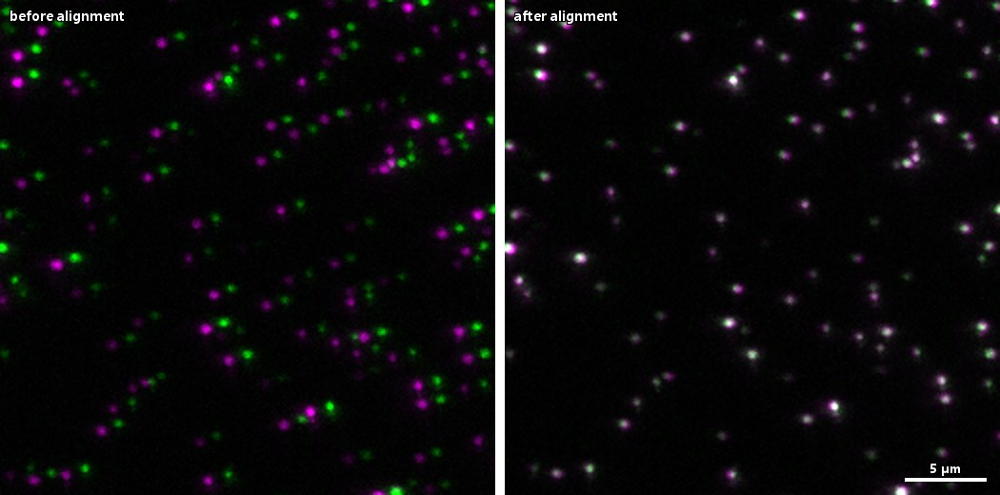
Save writes a small CSV. Two halves of one file are saved as the classic 2 × 3 matrix; more channels are saved as a tagged set, one matrix per camera half, which is what Live Deskew and Deskew Batch read:
# OPM alignment matrix set v1
convention,right-halves-mirrored;each-source-to-reference
reference,_Channel0001-left
source,_Channel0001-left,1,0,0,0,1,0
source,_Channel0001-right,0.99999561,-0.00296142,11.24099181,0.00296142,0.99999561,-6.93135987
source,_Channel0002-right,0.99999318,-0.00369436,12.70161538,0.00369436,0.99999318,-6.05906381Keep the CSV with the bead acquisition (here
4_beads_for_overlay_0/result/beads-alignment.csv) and point every experiment of that
session at it. Re-measure whenever the optics are touched.
Step 4 · The experiment run
Settings for the time lapse
Only four things change from the bead run:
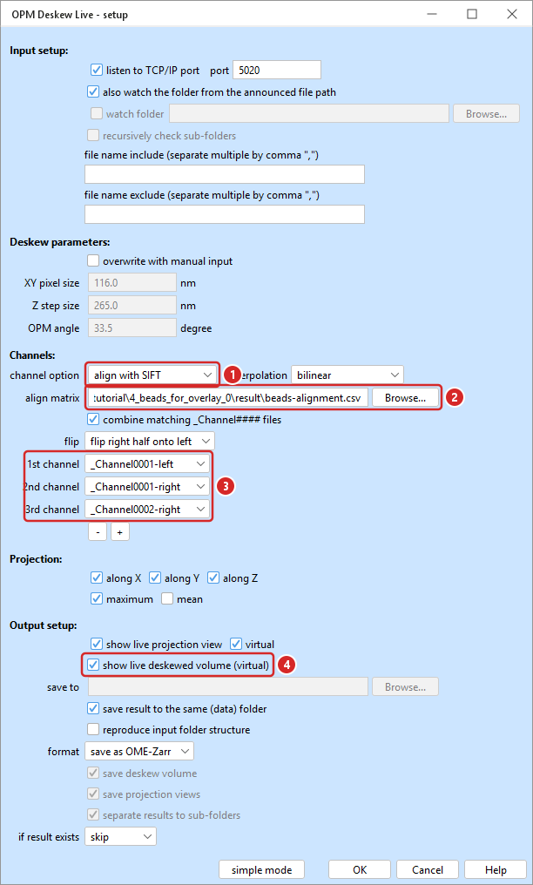
- channel option: align with SIFT — how a single file would be treated. It is not read while the files are combined, but it keeps the intent of the run on record.
- align matrix — the CSV from Step 3.
- three slots —
_Channel0001-left,_Channel0001-right,_Channel0002-right: the three halves that carry signal in this experiment, in the order they should appear as channels. - show live deskewed volume (virtual) — on as well now, so the 5-D volume can be scrolled through while it is written.
Press OK, then start, and let the acquisition (or the replay script) run.
Reading the status panel
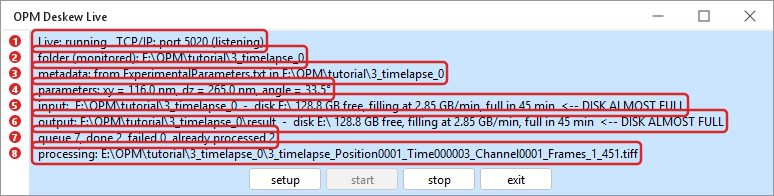
- Live — whether the listener is running, and whether the TCP port is actually open.
- folder — the folder being monitored, and whether it is monitored at all.
- metadata — where the geometry came from: the parameter file and its folder,
waiting, or(manual). - parameters — the three numbers in force. It says
waiting for metadatarather than showing the previous session's values. - input — the acquisition folder, and the free space and fill rate of its disk.
- output — the result folder, and the same for its disk. Raw data and results are often on different disks, and this says which one is filling.
- queue — files waiting, done, failed, and already processed (skipped because the result exists, or because a sibling of the same time point did the work).
- processing — the file in flight.
Two things worth knowing about the disk lines: the rate is measured, not estimated from the data size, so it accounts for the raw files still arriving as well as the results being written; and it needs half a minute of run time before it can say anything. Crossing below six hours, one hour, or 5 GB free also writes a line to the Fiji Log, because that is the window somebody is likely to have open.
Why the screenshot says the disk is almost full. The run above was replayed as fast as the machine could take it - a time point every 20 s instead of every 5 min - so it was filling the disk at 2.85 GB/min and the forecast was 45 minutes. At the real acquisition interval the same experiment writes about 0.14 GB/min. The forecast follows what is actually happening, which is the point of measuring it.
What it costs
Measured on this acquisition (one time point = 2 files = 4 stored camera halves, 3 of them in the result), writing OME-Zarr on a desktop with an 8 GB GPU:
| Step | Time per time point |
|---|---|
| deskew, all four halves (GPU) | 7.0 s |
| six projections per channel | 2.7 s |
| write and commit the time point | 7.9 s |
| total | 17.7 s, against a 5 min acquisition interval |
| result size | ≈ 0.7 GB per time point (2.4 GB/min at this pace) |
The log line that says so, from OPM_live2.log in the result folder:
Zarr committed 3_timelapse_Position0001_Time000004_Channel####_Frames_1_451
in E:\OPM\tutorial\3_timelapse_0\result\3_timelapse_0.ome.zarr; 4 channel(s):
deskew 7.032, projections 2.731, write 7.893, total 17.662 s
skip 3_timelapse_Position0001_Time000004_Channel0002_Frames_1_451.tiff
(its acquisition-channel group was already processed in this run)Stopping, resuming, and interruptions
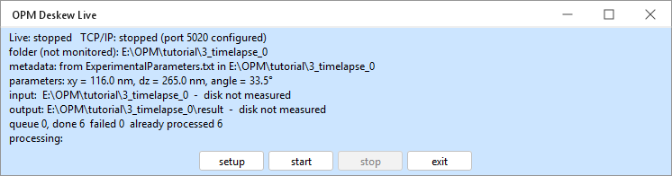
- stop finishes the time point in flight and then ends the run. The store is left with every committed time point readable.
- Escape, or
Batch Processing ▸ Terminate…, stops a run that is busy. Cancellation is cooperative: it unwinds between units of work, so what is on disk is exactly what a shorter complete run would have left. - Starting again over the same folder with if result exists: skip resumes: committed
time points are skipped (they show up in
already processed) and the run continues with the first one that is missing or incomplete. - Pressing setup during a run applies only the deskew geometry - which is what a run waiting for metadata needs - and tells you that the rest was not applied.
Step 5 · The live preview and the OPM Data Viewer
The preview is not a window of its own: Live Deskew hands the run to the OPM Data Viewer, which opens the views and then follows the dataset as it grows. So everything the viewer can do - region crops, channel composition, opening another time point - is available over a run in progress, and the windows it opened keep their size, zoom and display ranges as time points are appended.
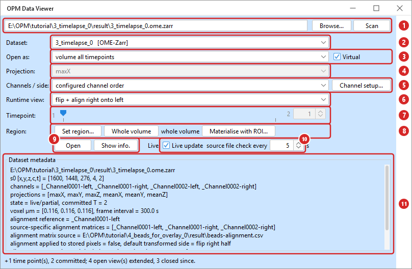
- the path, Browse and Scan — a dataset, or a folder holding several. A live run points this at itself.
- Dataset — everything found under that path, marked
[OME-Zarr]or[TIFF]; the viewer opens both formats. - Open as and Virtual —
volume all timepoints,volume single timepointorprojection movie. Virtual reads planes as needed and is the safe default; it is re-ticked whenever the dataset or the mode changes. - Projection — which projection the movie shows (
maxZ,maxY,maxX, and the mean versions). - Channels / side and Channel setup… — which stored halves to show and in what order (see below). Greyed out for a TIFF result, which has its composition in its pixels.
- Runtime view — how to compose them: stored halves untouched, the two halves side by side, flipped, or flipped and aligned with the stored matrix.
- Timepoint — the time point a single-time-point view opens at; the slider follows the dataset as it grows.
- Region — restrict the next view to a sub-volume:
Set region…(or take it from an ROI drawn on an open view),Whole volumeto clear it, andMaterialise with ROI…to pull one box into memory. A region describes the next view; windows already open keep theirs. - Open and Show info. — open the view described by the controls, or print the dataset's provenance: geometry, deskew matrix, alignment matrix and its source, channel labels, committed time points.
- Live update — follow a dataset that is still being written, polling every few seconds. A live run ticks this itself.
- Dataset metadata — what the store says about itself.
Channels / side and Runtime view
An OME-Zarr store holds the camera halves exactly as they were acquired, so the viewer composes the picture when it opens it. That is two decisions: which channels, and how to put them together.
| Runtime view | What it does |
|---|---|
stored halves as separate channels (no transform) |
The stored pixels, one channel per half. Nothing is transformed - the honest baseline. |
whole: left + right side by side |
Joins the two halves back into the full camera width. The deskew shears in Y and Z only, so the halves side by side are the full-width deskew. |
flip only (side from metadata) |
Mirrors the half the run flipped, without an alignment. |
flip + align right onto left / left onto right |
Mirrors and applies the stored rigid 2-D matrix - the composed result. |
A live preview is opened the way the run composes its result, so what you watch is the experiment's own channel layout, not the store's halves. Channel setup… is where the slots, the flipped side, the interpolation and the GPU switch live - and where a new alignment matrix can be written into an existing dataset's metadata, which changes every view within seconds and rewrites no pixels.
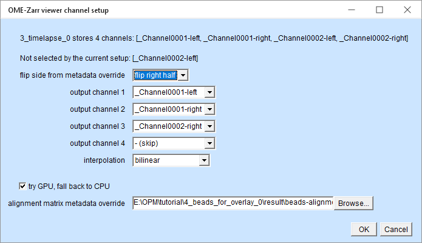
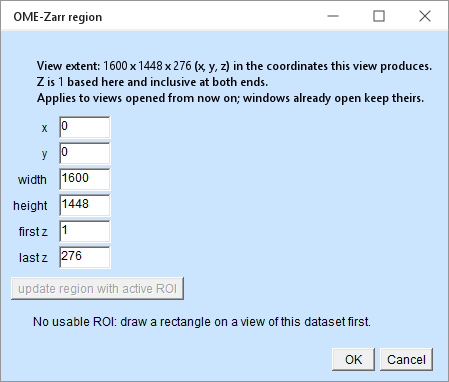
Set region…. The extent quoted is the extent of the view the
controls describe, so a side-by-side view is twice as wide as the stored array; Z is
1-based and inclusive. update region with active ROI fills the box in from a
rectangle drawn on an open view of this dataset, mapping it back even from an already
cropped one - it stays disabled until there is one. Only the chunks
the box touches are read - one time point of a 64 × 64 region of this dataset costs
848 chunks and about a second, against a gigabyte of whole-volume buffer.The preview windows
Every projection the run writes gets a window, and the volume gets one more. They are ordinary Fiji composites, so the Channels tool, brightness/contrast, ROIs and measurements all work.
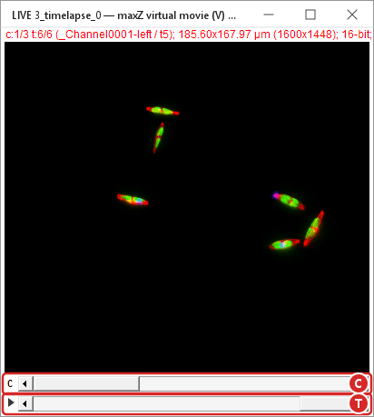
maxZ, the top view, as a movie over the time points committed so far.
C steps through the channels, T through time.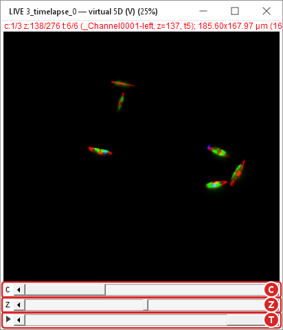
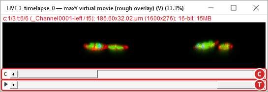
maxY, a side view: X across, Z down - 276 planes of sample depth
against 1600 px of width, which is the shape an OPM volume has. The window title says
(rough overlay); see the warning below.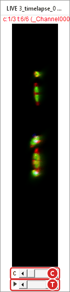
maxX, the other side view, is narrow for the same reason: its width
is the volume's depth. A view that opens absurdly small or at 1.4 % zoom is ImageJ
placing a window, not a broken projection.The side projections of an aligned dataset are rough overlays. maxX and
maxY of a flipped-and-aligned view carry the alignment only as far as a projection
can: the in-plane part of the matrix, without the rotation. They are titled
(rough overlay) and they log a warning. Use them to watch a run, not to measure - the
true reduction would mean recomputing the projection from the volume, which is roughly 30 minutes
against one second.
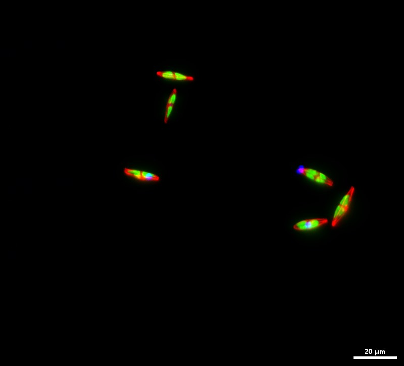
maxZ of the three output
channels (shown at half size; 185.6 × 168.0 µm). The empty corners are where the scanned
oblique planes do not reach - the price of the geometry, and the reason a deskewed volume
is wider than the camera.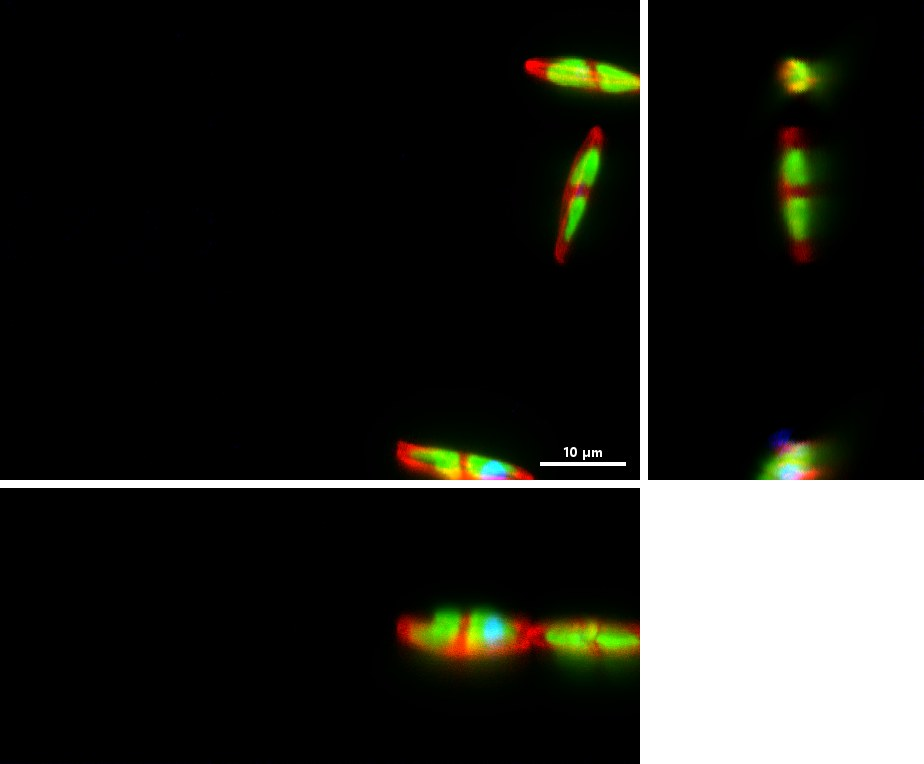
maxZ) with the two side views beside and below it, at the same scale. This is
the composed, aligned result - the picture the experiment was after.Step 6 · What is on disk afterwards
3_timelapse_0/ the acquisition folder
├── 3_timelapse_Position0001_Time000001_Channel0001_Frames_1_451.tiff
├── …
├── ExperimentalParameters.txt
├── .opm-processed.tsv what has been processed, for resuming
└── result/
├── 3_timelapse_0.ome.zarr/ one dataset for the whole acquisition
│ ├── .zattrs OME-NGFF 0.4 metadata + the opm-provenance record
│ ├── s0/ the 5-D volume, t c z y x, chunks one plane thick
│ ├── projections/maxZ … meanX/ all six projections
│ └── _SUCCESS written when the run finished cleanly
└── OPM_live2.log every line the run wroteTo come back to it later, open Plugins ▸ OPM Toolset ▸ OPM Data Viewer, point it at
the acquisition or its result folder and press Scan: the same controls as in
Step 5, without the live part. Utilities ▸ Export OME-Zarr region to TIFF writes a
box of it back out as an ordinary TIFF - the viewer itself never writes pixels.
Cheat sheet
| Setting | Bead run | Experiment run |
|---|---|---|
| listen to TCP/IP port | on, the acquisition software's port (5020 here) | |
| also watch the announced folder | on | |
| overwrite with manual input | off (geometry from the parameter file) | |
| combine matching _Channel#### files | on | |
| flip | flip right half onto left | |
| align matrix | empty | the bead CSV from Step 3 |
| slots | 0001-left, 0002-right | 0001-left, 0001-right, 0002-right |
| projections | X, Y, Z, maximum | |
| previews | projection only | projection + volume |
| output | save as OME-Zarr, into result beside the data | |
| if result exists | skip | |
If something does not happen
| Symptom | What it means |
|---|---|
TCP/IP: stopped after start, or a message about the port |
Another listener already has the port - often a second Fiji, or a previous run that was not stopped. The run continues with folder watching if that is configured. |
metadata: waiting, queue growing |
No ExperimentalParameters.txt has been found yet. Put it in the
acquisition folder, or use overwrite with manual input. Nothing is lost - the
queue is released as soon as the geometry is known. |
hold … waiting for acquisition channel 2 in the log |
The time point's other _ChannelNNNN file has not arrived yet. Expected
while combining; it is retried, not dropped. |
Nothing is processed, already processed climbing |
The results are already there and if result exists is skip. That is
a resume; use overwrite to redo them. |
| No preview window | The previews are ticked in the Output setup section, and a preview appears once the first time point is on disk - not at start. |
| A view opens at 1.4 % zoom | An ImageJ quirk with window placement, not a broken view. Press + or use
Image ▸ Zoom ▸ View 100%. |
| Deskewing suddenly takes ten times longer | The GPU fell back to the CPU, usually after a failed allocation. The Fiji Log says so; restarting Fiji clears the CLIJ context. |
| Fiji will not quit after a run | Stop the listener first (stop, then exit). Also close ImageJ's
Monitor Memory… window, which keeps Fiji alive on its own. |
Related commands
Batch Processing ▸ Deskew— the same settings over a folder that is already complete.Deskew Image— one open volume, with a preview.Utilities ▸ Channel Alignment— the bead measurement of Step 3.OPM Data Viewer— open, crop and export finished results.Batch Processing ▸ Terminate…— stop a run that is already going.